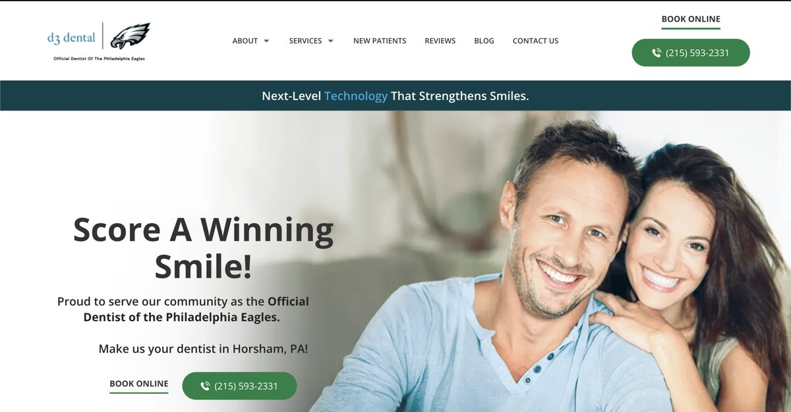
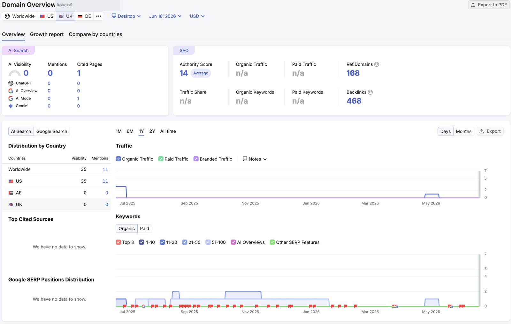
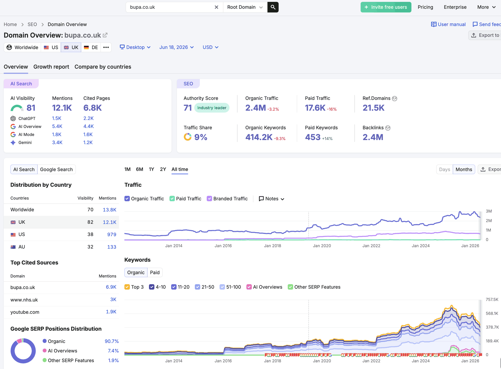

SEO built for more enquiries.
We help UK businesses get found on Google and in AI search. Then we turn those visitors into enquiries. You see the work we did and the enquiries it brought, every month.
 Google
Google Gemini
Gemini ChatGPT
ChatGPT Claude
ClaudeBusinesses losing ground in search
Search is changing fast. Many good businesses are slipping without knowing why. If any of these sound like you, we can help.
- ✓ Your organic traffic has dropped or gone flat. You are under pressure to explain why, and to say what comes next.
- ✓ You rank well on Google. But you are missing from AI Overviews, ChatGPT and other AI tools, where more buyers now start.
- ✓ You have SEO work in progress. But you have no fast, reliable way to keep up as search changes.
Most buyers start with a search
When people need what you sell, they search for it. They type it into Google. They ask an AI tool. They read reviews. Then they choose one of the few businesses that show up. If you are in that group, you get the enquiry. If you are not, you do not get a chance.
This is why search is the channel with the best long-term value. The visitors are people who already want what you sell. And the work keeps paying you back long after you publish it. A good page can bring enquiries for years. A paid ad stops the day you stop paying.
The catch is that search is now harder and wider than before. You have to show up on Google and in AI answers. You have to be fast, clear and trusted. That is the work we do, in the order most likely to bring you enquiries.
There is a second reason to act now. AI tools are still new for most businesses. Few have set their site up for them yet. That gap is an opening. The firms that prepare early get named first when a buyer asks an AI tool for a recommendation. We help you take that spot before your competitors do. The same work lifts your Google rankings too. So you gain on both fronts at once. None of it needs a separate, complex plan. It comes from doing the basics well: a clear site, clean facts, real reviews and useful content.
Find the opportunities other SEO agencies miss
We help small and growing UK businesses get more enquiries from search. We are clear about the work. We report the results in words you can use. The first review is useful even if you never hire us. Many agencies talk about being the best or the leading choice. We would rather show you the plan, do the work, and let the enquiries speak.
Talk to an SEO specialistA note from our founder
Hi, I am Raoul. I founded Digital Movement UK to do SEO that brings real enquiries. No jargon. No hidden work. You always know what I am doing and why. I review your site myself and plan the work myself.
You work with a senior person
The person who reviews your site plans the work. There is no hand-off to a junior who quietly does it. You get direct access to the person responsible for your results. You can reach me between monthly reports, any time you need to.
We get the basics right
Most SEO fails on the basics. Pages Google cannot read. Thin content. Slow templates. Weak local signals. We fix these first, because they bring the quickest wins. Then we build on a clean base.
We work to one number: your enquiries
Rankings and traffic are a means to an end. We report how many real enquiries the work brought. Each one is tied to its source. So you can see which work pays for itself.
Your customers search before they buy
When people need what you sell, they search for it. They use Google. They ask ChatGPT or Gemini. They read reviews. Then they pick one of the few businesses that show up. We get your business into that short list, on both Google and AI tools.
For years, being found meant ranking on Google. That still matters. But Google now answers many questions at the top with an AI Overview. And more people ask an AI tool for a recommendation. These tools name a few businesses. If yours is not one of them, you are missing buyers at the moment they decide.
The good news is simple. AI search uses the same base as Google ranking: pages it can read, clear answers, matching business details, real reviews, and trusted mentions. We build that base once, so you show up in both places as buyers move to AI.
This also raises the value of trust. An AI tool only names a business it can verify. So real reviews, matching details and a clear site matter more now than ever. We build for both fronts from the start. The work you put into being found keeps working as more buyers move to AI tools.
Where buyers search now
GoogleGoogle AI OverviewsChatGPTGemini PerplexityClaude
PerplexityClaudeFive steps, every month
Every campaign runs on the same simple loop. It keeps the work clear and the next move obvious. Here is what we do, in order.
Find where buyers search
We find the searches your buyers make, on Google and on AI tools. We group them by what the buyer wants. We weigh each group by how likely it is to bring an enquiry. High-value pages come first, so you see results sooner.
Fix the base and build the pages
We fix the technical issues that block Google and AI. We clear indexing problems, slow pages and weak internal links. Then we build the pages that can rank for those searches.
Be easy to understand and cite
We help Google and AI tools understand what you do and who you help. Clear answers, clean details and schema make you easy to quote. We keep your business facts the same on every page and listing.
Earn trust from other sites
We earn links and mentions from real publications and local sites. We earn them with useful content and outreach. This lets you compete in harder markets. AI tools also trust you more when real sites point to you.
Measure and adjust
We track rankings, AI answers, traffic and enquiries. Each month we report what changed in clear words. We tie each enquiry to the page and search that brought it. Then we choose the next move with you.
Audit, fix, scale
Days 1 to 30 — Audit and diagnose
We review your technical health, your content, your links, your local signals, and your AI visibility. We find where you are losing ground and which wins come fastest. You get a clear plan before any work starts.
Days 31 to 60 — Fix and build
We clear the blockers first: indexing, speed, weak pages, missing schema, broken redirects. Then we build or improve the pages most likely to bring enquiries, and start the local work.
Days 61 to 90 — Grow and report
We earn authority, sharpen the content, and improve your AI visibility. The first enquiries usually come in. You get a report that ties the work to results, with the next steps set out.
Six parts of a full SEO service
A full service has six parts. We rarely run all six at full speed at once. We start with the work most likely to bring enquiries, then add the rest.
A full SEO service has six parts. We rarely run all six at once. We start with the work most likely to bring enquiries, then add the rest.
Keyword research and strategy
We map the searches your buyers make. We check search demand and run competitor analysis to find the keywords and gaps you can win. We group searches by what the buyer wants: a quick question, a comparison, a local provider, a price check. We weigh each group by how likely it is to bring an enquiry. Then we pick the high-value pages to build first. A small business does not need a huge content plan to see the first results. We start with the work most likely to bring enquiries.
Technical SEO
We make sure Google and AI can read, render and trust your site. We fix indexing problems first. A page Google cannot reach cannot rank. We improve site speed and Core Web Vitals, mostly on mobile. We tidy up URLs, internal links, redirects and the sitemap. We add schema so machines understand each page. For bigger sites, we plan safe moves so a redesign does not lose your rankings. This work is quiet, and it often brings the quickest early wins.
On-page SEO and content
We give each page a clear title, description and headings. We add internal links to the pages that matter. We write content for the buyer's decision. Each money page should stand on its own. It should say what the service is, when it is worth buying, what it costs in broad terms, and what to look for. Around each money page we build guides and comparison pages. That gives the site real depth on a topic. Depth is also what earns featured snippets and AI answers.
Local SEO
If you serve an area, this is often the fastest route to enquiries. Google shows a map pack of three businesses above the normal results. Those three get most of the local clicks. We improve your Google Business Profile. We keep your name, address and phone the same everywhere. We earn and reply to reviews. We build local listings and write real location pages. For several locations, we set up a clean structure so each one ranks in its own area.
Link building and digital PR
In competitive markets, links decide who wins. We earn links and mentions from real publications and local organisations. We do this with useful content, data and outreach. We aim for links a human editor would choose to give. Those keep their value as Google changes. We avoid cheap links from low-quality networks. Those put your site at risk.
AI search (GEO)
More buyers now ask AI tools for a recommendation. We make your business easy for ChatGPT, Gemini, Claude, Perplexity and Google AI Overviews to understand and name. This uses the same base as Google ranking: clear answers, clean details, schema, real reviews and trusted mentions. We keep your business facts the same everywhere, so an AI tool can trust what it finds, and name you to buyers who ask.
You see the results every month
SEO is only worth doing if it brings customers. So we measure it that way. Each month you get a short report. It shows rankings for the terms that matter. It shows traffic to the pages that earn enquiries. It shows the enquiries the work brought. Each enquiry is tied to the page and search that created it.
We set up clean tracking in Google Analytics and Search Console. That keeps the numbers honest. We also track your presence in AI answers, next to your Google rankings. Buyers now use both, so we watch both.
We watch the early signals too. Rising impressions on commercial terms. Better rankings around a money page. More mentions in AI answers. These tell us a trend is coming, so we can act early. The report ends with a short, clear list of what we will do next. Every month closes with a clear decision and a short list to act on.
| What we track | What it tells you |
|---|---|
| Rankings and AI answers | Where you show up for the searches that bring buyers. |
| Traffic and behaviour | Which pages bring good visitors, and what they do next. |
| Conversions and enquiries | How many visitors become enquiries, tied to the source. |
| Next steps | The plan for the coming month, in clear words. |
The problems we fix first
Most sites lose ground for a few clear reasons. We find these in the first audit. We fix them early. They are not glamorous. They are what hold a site back.
- Pages Google cannot index, because of a wrong setting or tag.
- Thin service pages that give Google nothing strong to rank.
- Slow pages that fail Core Web Vitals on mobile.
- The same title and description on many pages, which confuses Google.
- Broken redirects left over from old changes.
- Pages that no internal link points to.
- A weak or half-finished Google Business Profile.
- Business details that do not match across the site, the profile and directories.
Each one is small. Each one holds back results. Fixing them often brings the first lift. It also clears the way for the content and links to pay off.
What it costs, and when results show
UK SEO pricing depends on a few honest things. How competitive your market is. How many pages need work. How much old technical debt the site carries. How fast you want to move. A small local campaign needs less work than a national or ecommerce one. So it costs less. A business that wants results quickly puts more into the early months.
We scope the first phase around the work most likely to bring enquiries. We show what each part of the budget buys. The work runs month to month, so you can stop any time. If paid ads or local work would bring enquiries faster while SEO builds, we say so.
On timing, you often see early movement in the first few weeks. That comes from technical fixes and local work. Stronger enquiry growth usually builds over three to six months. The hardest national terms take longer, because they need steady authority. We win the easier terms first. Then we go after the hard ones from a stronger base. The monthly report shows progress well before the headline rankings move.
A typical timeline
Clear from the first call
Your free review
The first step is a free review. We look at where you show up on Google and in AI answers. We check the health of your site. We look at the competitors who win your terms. We tell you the quickest useful moves. You keep that review whether or not you hire us.
The first ten days
When we start, the first ten days are about set-up. We get access to your site, your analytics and your Google Business Profile. We record where you rank today. We agree the first plan with you. There are no surprises about what happens first.
A steady monthly routine
After that, the work settles into a steady monthly routine. Each month has clear output: fixes, pages, links, local work and AI-visibility work. You get the report and the next steps. You can reach us between reports, any time you need us. As results build, we change the mix to whatever brings the next enquiry most cheaply.
One point of contact
You are never passed around. One person owns your account from the first call. You get the same contact every month. When you need a quick answer, you email or call, and you hear back fast. We keep the work visible, so you always know what is in progress and what comes next. We also review the whole plan with you every quarter. We look at what worked, what did not, and where to push next.
Who this works best for
Who it suits
This works for UK businesses that want a steady flow of good enquiries. It suits owner-led firms, trades, clinics, consultancies, ecommerce brands and B2B teams. It suits firms that already know a good enquiry is worth more than cheap clicks. It also suits teams that worked with an agency before and were unsure what was happening. The monthly report fixes that.
Ready to win the work
The strongest fits share one thing. They can turn a good enquiry into a sale. SEO shows your business to buyers when they search. The last job is to make those buyers comfortable enough to call. So our work includes the page copy, the proof, the forms and the clear next step. If your offer or pricing is not ready, we say so first. We would rather get that right than send traffic to a page that cannot convert it. SEO does not rescue a weak offer or slow follow-up. It works best when the rest of the business is ready to win the work.
Honest about timing
It also helps to be honest about timing. SEO is a strong long-term channel. It is not a quick fix. If you need sales this week, paid ads bring enquiries faster, and we will say so. The best results come when you treat SEO as a steady investment. Each month adds a little more: a few strong pages, a few good links, a cleaner site. Over a year, that builds a channel that brings enquiries without paying for every click. We set the pace with you, based on your budget and how fast you want to grow.
How the four services fit together
One shared job
SEO, AI search, paid ads and CRM share one job: more good enquiries, and more of them turning into sales. Most businesses do not need all four at once. The order matters as much as the services.
The right order for you
A local firm often starts with SEO and local work, then adds paid ads when it wants enquiries fast. An ecommerce brand often starts with technical SEO and content, then adds AI search and links for authority. A firm that already gets enquiries but loses them often starts with CRM, so the leads it has are captured and followed up. We help you decide the order in the first review, based on your biggest gap today: getting found, converting, or follow-up.
The full picture
Run together, the four let you see the full picture. What each channel costs. What it brings. Which pound to spend next. We add a service only when it will bring or convert more enquiries. That keeps the spend efficient, and every result clear.
Real client results
We complete these with real client numbers, with permission. We never invent results. If a number is here, it happened.
What the client thought the problem was
How we adapted the plan
The measured result
What a similar job costs
UK-specific: what we advise on and against
Two dentists. One search. Very different results.
We checked who wins the Google search "dentist London". The gap between page 1 and page 6 is the gap between a full diary and an empty one.

D3 Dental
London dental clinic
- 14authority score · average
- 0AI search visibility
- 168referring domains
- Loworganic traffic to the site
Patients choose from the first results. A clinic on page 6 stays out of sight, so those enquiries go to the practices ranked above it.
Bupa Dental
National dental brand
- 71authority score · industry leader
- 81AI search visibility
- 21.5Kreferring domains
- 2.4Morganic visits a month
Bupa holds top-3 spots across thousands of dental searches. That likely brings thousands of patient enquiries every month, from search alone.
Two very different traffic curves


Martey Quaye
Martey co-leads Digital Movement. He sets the growth strategy and keeps every account aimed at one thing: more good enquiries. He stays close to client work, so the plan always matches the goal and the next move is clear.
How we report
Each month you get a short report in clear words. It shows what we did, what changed on Google and in AI answers, and the enquiries the work brought. It ends with the next move, so you always know where you stand and what you are paying for.
What you can rely on
Senior work
The founder plans and runs your campaign. No hand-off to a junior.
Clear reports
Monthly updates in clear words, tied to enquiries. No jargon.
Stop any month
You pay month to month. The work has to keep bringing results.
What clients say
Great quality service, proactive and positive, easy to deal with, and outcomes as promised. Highly recommend Stuart and the team, and grateful for their work so far.
4 months ago
Stuart, Dean and the crew have been excellent in creating a complete redesign of a new website for my business and managing Google advertising and SEO work with great results quite…
11 months ago
Digital Movement have been amazing to work with. Dean and the team built me a great website and set up SEO and Google Ads and I started getting real leads not long after. The team is…
10 months ago
Punctual organise efficient is just a few of the best quality. I have been dealing with this company for years now and I couldn’t recommend a better social media marketing agency. Not…
9 months ago
Marty and the team have been absolutely awesome! They set up my website and are currently working on my Google Ads and SEO. They’re always quick to respond to any questions or concerns…
a year ago
We’ve used Digital Movement to over 10 now and we highly recommend, We noticed a great uptick from the start.
a month ago
The team at Digital Movement has been absolutely fantastic in creating my shiny new website for Willow Branch Photography, and I couldn't be happier with the redesign and development!…
a year ago
Stuart is incredibly professional with attention to detail, clear communication and understanding of my goals. The creativity, copy and design technique of the ads are visually…
a year ago
From our initial conversation with Stuart I knew this was the company for us. He was honest, passionate and thorough. Nothing was too much trouble and he stepped us through the process…
a year ago
I can’t recommend Digital Movement enough for their incredible SEO services! As the owner of a small online store, I was struggling to attract consistent traffic and generate sales.…
a year ago
I can't say enough about the website design services provided by Digital Movement. They took the time to understand my business needs and translated them into a beautiful website. The…
2 years ago
Digital Movement has been an invaluable partner for our business. Their expertise in SEO and Google Ads has helped us to increase our online visibility and attract more customers. We…
3 years ago
So far I cannot fault this company at all. They have been absolutely fantastic to work with. I’ve been blessed with Martey and May who have done an amazing job. My website has been…
a year ago
Digital Movement made updating out website so easy. They helped us to create our new website with no fuss. We even decided to completely change our wording after a draft was finished…
5 years ago
Digital Movement manages SEO and Google Ads for auswoodcare.com.au - our start-up e-commerce business which sells timber care and maintenance products in Australia. We're very happy…
2 years ago
Stuart and Dean have been very helpful in the launch of Horizon Australia Cleaning which is my new cleaning business. The leads generated so far have been good quality and I am already…
2 years ago
Digital Movement's SEO services have made a huge difference for my business. They really know what they're doing when it comes to improving my website's visibility in search results.…
2 years ago
I would like to say that the whole team at digital movement have done an outstanding job from start to finish designing and developing the website for my new business. The…
4 years ago
We have recently used Digital movement to build our new website, switching from another provider. We have found Stuart has been more then helpful and made the process as easy/stress…
4 years ago
Martey at digital movement was outstanding. I couldn’t be more pleased with the service and content he developed with our website. Martey did his homework and totally understood my…
5 years ago
Simple monthly plans
Clear deliverables, clear timelines, clear reports. Every plan includes AI search support. These tiers show the shape of the work at each level. The prices are set to fit your market and your goals.
Starter SEO
- ✓ Keyword and competitor research
- ✓ Core technical fixes
- ✓ A few SEO articles each month
- ✓ Local listings set up
- ✓ Monthly report
Growth SEO
- ✓ Everything in Starter
- ✓ More content each month
- ✓ Link building and digital PR
- ✓ Google Business Profile management
- ✓ AI search work
- ✓ Conversion improvements
Market Leader SEO
- ✓ Everything in Growth
- ✓ The most content and links
- ✓ Ecommerce or multi-location SEO
- ✓ Competitor tracking
- ✓ Priority support
See what to fix first, at no cost
Send us your site and the service you want to grow. We reply with the quickest useful moves and whether SEO, AI search, paid ads or local work should come first.
Get my free SEO reviewFrom our blog
Human insert — link your latest articles here.
SEO vs paid ads: which brings cheaper enquiries?
How to show up in ChatGPT and Google AI Overviews
How to win the Google map pack in your town
Common questions
Short answers on fit, cost, timing, AI search, and how the services work together.
What does an SEO agency do?
An SEO agency helps people find your business when they search, then helps turn those visitors into enquiries. The work covers keyword research, technical fixes so Google and AI can read your site, content, local SEO for the map pack, links for authority, and AI search so tools like ChatGPT and Google AI Overviews can recommend you. A good agency shows the plan, does the work each month, and reports the enquiries it brought.
How much does an SEO agency cost in the UK?
It depends on how competitive your market is, how many pages need work, and how fast you want results. Small local campaigns cost less. National or ecommerce campaigns need more work, so they cost more. We scope the first phase around the work most likely to bring enquiries, keep it month to month, and show what each pound buys.
How long does SEO take to bring enquiries?
You often see early movement within a few weeks after technical fixes and local work. Stronger enquiry growth usually builds over three to six months. The hardest national terms take longer. The monthly report shows what is improving and what comes next, so you can see progress early.
Can you help us show up in AI search like ChatGPT?
Yes. AI search uses the same base as Google ranking: pages it can read, clear answers, matching business details, schema, real reviews, and trusted mentions. We strengthen those so ChatGPT, Gemini, Claude, Perplexity and Google AI Overviews can understand your business and name it when buyers ask.
Do you only do SEO, or paid ads and CRM too?
SEO is our core. It works best with three other services. AI search gets you found inside AI tools. Paid ads bring enquiries quickly while SEO builds. CRM makes sure every enquiry is captured and followed up. You can start with SEO and add the rest when they help.
Is SEO worth it for a small business?
SEO is worth it when buyers already search for what you sell and your site can turn visitors into enquiries. It is weaker when the offer is unproven or you need sales this week. We check the market first and suggest the smallest useful first step. We will say so if paid ads or local work would bring enquiries faster.
How is local SEO different from regular SEO?
Standard SEO wins listings across the whole country or a sector. Local SEO wins buyers near you. Google shows a map pack of three businesses above the normal results, and local SEO helps you appear there. It leans on your Google Business Profile, matching name, address and phone, reviews, local listings and location pages. Many businesses need both.
Do I need new content every month?
Often, yes, but only where it helps. New guides, service pages and comparison pages build depth on a topic, which Google and AI tools reward. We write the pages most likely to bring enquiries first. We would rather publish a few strong pages than many weak ones.
What do you need from us to start?
Only a few things. Access to your site, your analytics and Google Search Console. Your Google Business Profile if you serve a local area. A short chat about your best customers and the services you most want to grow. We handle the rest and keep you informed.
See what to do first
Send your site and the service you want to grow. We reply with the first useful moves and what should come first.
Digital Movement Marketing Ltd
128 City Road, London, EC1V 2NX, United Kingdom
Email: office@digitalmovement.uk
Phone: 0203 815 7992
Co-Founder: Raoul (Alex) Müller. Founded 2018 in Melbourne. We work across Australia, New Zealand and the UK. Registered in England, company no. 17110525.